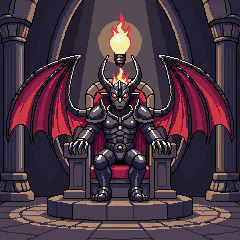
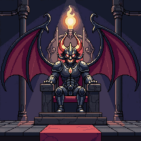
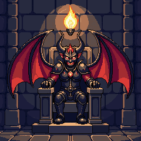
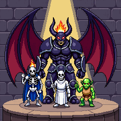
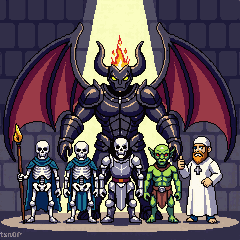
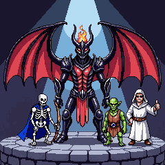

<title>점검 후속 결정</title>
<link rel="stylesheet" href="https://fonts.googleapis.com/css2?family=Do+Hyeon&family=IBM+Plex+Sans+KR:wght@400;600&display=swap">
<style>
/* 레이아웃: 결정 4개를 절로 나누고, 그림은 지금 것과 후보를 나란히. 게임과 같은 밤 색 한 테마 */
:root {
  color-scheme: dark;
  --page: #120c18; --ink: #ece4f2; --muted: #a99bb5; --line: #2f2439; --card: #1d1526;
  --gold: #ffcf4d; --ruby: #ff4a5e; --hp: #3cf07a; --panel: rgb(81, 20, 35);
  --game: 'Do Hyeon', 'Malgun Gothic', sans-serif;
  --body: 'IBM Plex Sans KR', system-ui, sans-serif;
}
body { background: var(--page); color: var(--ink); font: 15px/1.65 var(--body); }
main { max-width: 960px; margin: 0 auto; padding-block: 28px 64px; padding-inline: 16px; display: grid; gap: 36px; }
h1, h2, h3 { font-family: var(--game); font-weight: 400; margin: 0; text-wrap: balance; }
h1 { font-size: 30px; } h2 { font-size: 22px; } h3 { font-size: 17px; }
p { margin: 0; max-width: 65ch; }
.lede, .note { color: var(--muted); } .note { font-size: 13px; }
section { display: grid; gap: 14px; }
.row { display: flex; flex-wrap: wrap; gap: 14px; }
.art { display: grid; gap: 6px; justify-items: center; text-align: center; font-size: 13px; width: 200px; }
.art img { width: 200px; height: 200px; image-rendering: pixelated; border: 1px solid var(--line); border-radius: 6px; display: block; }
.art small { color: var(--muted); }
.rec { font: 600 11px var(--body); color: #1c1206; background: var(--gold); padding: 2px 6px; border-radius: 4px; }
.wrap { overflow-x: auto; border: 1px solid var(--line); border-radius: 6px; background: var(--card); }
table { border-collapse: collapse; width: 100%; min-width: 520px; font-variant-numeric: tabular-nums; }
th, td { text-align: left; padding: 8px 12px; border-bottom: 1px solid var(--line); vertical-align: top; }
th { font-size: 12px; color: var(--muted); font-weight: 600; }
tr:last-child td { border-bottom: 0; }
.mock { width: 300px; max-width: 100%; border: 12px solid transparent; border-image: url(frame_sq.png) 10 / 12px stretch; background: var(--panel); background-clip: padding-box; image-rendering: pixelated; font-family: var(--game); padding: 6px 8px; display: grid; gap: 8px; }
.mock h4 { margin: 0; font-weight: 400; font-size: 18px; color: #efe3c8; }
.gain { display: flex; justify-content: space-around; }
.gain span { display: grid; justify-items: center; font-size: 13px; color: #c9ae9a; }
.gain img { width: 30px; height: 30px; image-rendering: pixelated; }
.gain b { font-weight: 400; color: var(--gold); font-size: 18px; }
.lines span { display: block; font-size: 14px; }
.lines b { color: var(--gold); font-weight: 400; }
.btns { display: flex; gap: 6px; }
.btn { flex: 1; min-height: 36px; display: grid; place-items: center; border: 9px solid transparent; border-image: url(bar.png) 10 fill / 9px stretch; image-rendering: pixelated; color: #f4ecdc; font-size: 15px; }
.tip { font-size: 13px; color: #e7c8ff; }
.decide { border: 1px solid var(--gold); border-radius: 6px; padding: 14px 16px; display: grid; gap: 8px; }
.decide h2 { color: var(--gold); font-size: 19px; }
ul { margin: 0; padding-left: 20px; display: grid; gap: 4px; }
</style>
<main>
  <header style="display:grid;gap:8px">
    <h1>점검 후속 결정</h1>
    <p class="lede">전체 플레이 점검에서 나온 것 중 그림·밸런스·화면이 바뀌어 승인이 필요한 네 가지입니다. 강화 ×10·최대, 난이도 표시, 영혼석 → 상점, 부활 0 숨김, 마왕 레벨 표기, 튜토리얼 정리, NPC 전리품 버그는 이미 고쳐서 올렸습니다.</p>
  </header>

  <section>
    <h2>1. 컷신 속 마왕</h2>
    <p class="note">지금 컷 3·4의 마왕은 게임 속 마왕(불타는 왕관·검은 가시 갑옷·휜 뿔)과 디자인이 다릅니다. 같은 특징으로 다시 그렸습니다. 컷 3의 "전구(번뜩 떠오른 생각)"는 횃불처럼 나와서, 고르시면 그 부분만 전구로 고쳐 그립니다.</p>
    <h3>컷 3 — "…그럼 나도 용사가 되면 되겠군."</h3>
    <div class="row">
      <div class="art"><span>지금</span></div>
      <div class="art"><span>A <span class="rec">추천</span><small>왕관 불꽃이 또렷, 구도가 지금과 비슷</small></span></div>
      <div class="art"><span>B<small>붉은 카펫·계단, 더 어둡고 웅장</small></span></div>
      <div class="art"><span>C<small>붉은 갑옷 장식, 머리 위 불빛이 전구에 가까움</small></span></div>
    </div>
    <h3>컷 4 — "낮엔 용사로 남의 성을 털고."</h3>
    <div class="row">
      <div class="art"><span>지금</span></div>
      <div class="art"><span>A <span class="rec">추천</span><small>스포트라이트, 부하 셋이 앞에</small></span></div>
      <div class="art"><span>B<small>부하가 다섯으로 늘었고 왼쪽 아래에 이상한 글자가 찍힘(고쳐야 함)</small></span></div>
      <div class="art"><span>C<small>붉은 갑옷, 푸른 조명</small></span></div>
    </div>
  </section>

  <section>
    <h2>2. 지면 일부 보상</h2>
    <p class="note">지금은 마왕 앞까지 뚫어도 약탈·명예가 0입니다. 뚫은 층만큼 승리 전리품의 일부를 서버가 새로 줍니다(상대 성의 골드는 줄지 않음). 명예는 이길 때만.</p>
    <div class="wrap"><table>
      <tr><th>안</th><th>규칙</th><th>1층 성에서 1층 뚫고 짐</th><th>3층 성에서 마왕 앞까지 가서 짐</th></tr>
      <tr><td>A <span class="rec">추천</span></td><td>뚫은 층마다 승리 전리품의 15%</td><td>15%</td><td>45%</td></tr>
      <tr><td>B</td><td>뚫은 층마다 10%</td><td>10%</td><td>30%</td></tr>
      <tr><td>C</td><td>(뚫은 층 ÷ 전체 층) × 50%</td><td>50%</td><td>50%</td></tr>
    </table></div>
    <p class="note">A는 깊이 갈수록 더 받아 "조금만 더 강했으면" 하는 마음이 들고, 이겼을 때(100%)와 차이도 큽니다.</p>
  </section>

  <section>
    <h2>3. 결과 창</h2>
    <div class="row">
      <div style="display:grid;gap:6px">
        <div class="mock"><h4>함락!</h4><div class="lines"><span>약탈 <b>+145</b></span><span>명예 <b>+15</b></span><span>영혼석 <b>+3</b></span></div><div class="btns"><span class="btn">확인</span></div><div style="height:90px"></div></div>
        <span class="note">지금: 글자 세 줄, 아래가 비어 있음</span>
      </div>
      <div style="display:grid;gap:6px">
        <div class="mock"><h4>함락!</h4><div class="gain"><span><b>+145</b>약탈</span><span><b>+15</b>명예</span><span><b>+3</b>영혼석</span></div><span class="tip">추천: 슬라임 강화 ×10 (290 골드)</span><div class="btns"><span class="btn">강화하러</span><span class="btn">다시 출정</span><span class="btn">확인</span></div></div>
        <span class="note">A <span class="rec">추천</span> 큰 아이콘 숫자 + 다음 행동 버튼(강화하러·다시 출정) + 추천 한 줄</span>
      </div>
      <div style="display:grid;gap:6px">
        <div class="mock"><h4>함락!</h4><div class="gain"><span><b>+145</b>약탈</span><span><b>+15</b>명예</span><span><b>+3</b>영혼석</span></div><div class="btns"><span class="btn">다시 출정</span><span class="btn">확인</span></div></div>
        <span class="note">B 큰 아이콘 숫자 + 다시 출정만</span>
      </div>
    </div>
  </section>

  <section>
    <h2>4. 순위의 그림자 마왕</h2>
    <p class="note">브래킷의 빈자리를 채우는 그림자 마왕은 시즌 시작부터 시간당 0.5~7.5점씩 오릅니다. 첫 시즌 시작이 10월 12일이라, 그 전에 출시하면 그때까지 그림자 마왕이 모두 0점이라 순위가 비어 보입니다.</p>
    <ul>
      <li>A <span class="rec">추천</span>: 시즌 시작 전에는 브래킷이 만들어진 때부터 오르게 한다(같이 들어온 경쟁자처럼 보임)</li>
      <li>B: 첫 시즌 시작을 출시일로 당긴다(출시일을 알려 주셔야 함)</li>
      <li>C: 그대로 둔다(10월 12일 뒤 출시라면 문제없음)</li>
    </ul>
  </section>

  <section class="decide">
    <h2>정해 주실 것</h2>
    <ul>
      <li>컷 3: 지금 그대로 / A(추천) / B / C, 컷 4: 지금 그대로 / A(추천) / B / C</li>
      <li>지면 보상: A 15%(추천) / B 10% / C 50% 비율 / 안 함</li>
      <li>결과 창: A(추천) / B / 지금 그대로</li>
      <li>그림자 마왕: A(추천) / B / C</li>
    </ul>
  </section>
</main>
